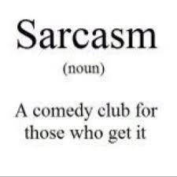
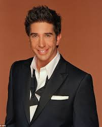
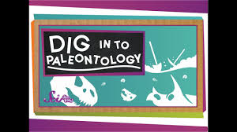
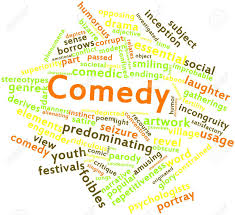
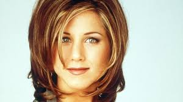

| Character | Image | Favourite scene | Character information | Speciality |
|---|---|---|---|---|
| Joey Tribbiani | |
This is a link | Joey is portrayed as promiscuous and dim-witted but good-natured, as well as very loyal, caring, and protective of his friends. He is a food-loving womanizer who has had more luck with dates than any of the other group members. In contrast to his "ladies man" personality, he has also a marked childish side. | |
| Chandler Bing | |
This is a link |
Personality. Though Chandler never lets up by using sarcasm as a defense, he has a tendency to come off as needy and makes bad first impressions as said by Phoebe with his constant joke-making and brash demeanor. Despite this emotional immaturity, Chandler is the most financially secure of his friends. |  |
| Ross Geller |  | This is a link |
While he is smart, polite, caring, thoughtful and kind, Ross is often clumsy and socially awkward - taking the characteristics of the stereotypical "loser nerd". He is sometimes shown to have a good sense of humor. He is the only member of the group of friends with a doctorate and, as such, can be arrogant. |  |
| Phoebe Buffay | |
This is a link |
Personality. Phoebe is a sweet-natured but odd guitar player. Having experienced nothing like a normal, complete childhood, Phoebe is often very dim-witted, sometimes smart and is in some regards still a child at heart. She believed Santa Claus existed, until Joey told her otherwise. |  |
| Monica Geller | |
This is a link |
energetic, hyper, and obsessive-compulsive. She's the “mother” of the group, and like some mothers, she can be overbearing and domineering. But she can also be the level-headed practical friend, helping others through their irrational moments. Monica is loyal and caring. | |
| Rachel Green |  | This is a link |
According to Rachel's original character description, written by Crane and Kauffman themselves for the show's pilot, the character is a spoiled yet courageous young woman who "has worked for none of what she has", unlike best friend Monica, and is initially "equipped to do nothing". |


Friends is an American sitcom television series, created by David Crane and Marta Kauffman, which aired on NBC from September 22, 1994, to May 6, 2004, lasting ten seasons.[1] With an ensemble cast starring Jennifer Aniston, Courteney Cox, Lisa Kudrow, Matt LeBlanc, Matthew Perry and David Schwimmer, the show revolves around six friends in their 20s and 30s who live in Manhattan, New York City. The series was produced by Bright/Kauffman/Crane Productions, in association with Warner Bros. Television. The original executive producers were Kevin S. Bright, Kauffman, and Crane.
Kauffman and Crane began developing Friends under the title Insomnia Cafe between November and December 1993. They presented the idea to Bright, and together they pitched a seven-page treatment of the show to NBC. After several script rewrites and changes, including title changes to Six of One[2] and Friends Like Us, the series was finally named Friends.[3]
Filming took place at Warner Bros. Studios in Burbank, California. All ten seasons of Friends ranked within the top ten of the final television season ratings; it ultimately reached the number-one spot in its eighth season. The series finale aired on May 6, 2004, and was watched by around 52.5 million American viewers, making it the fifth most-watched series finale in television history,[4][5][6] and the most-watched television episode of the 2000s.[7][8]
Friends received acclaim throughout its run, becoming one of the most popular television shows of all time.[9] The series was nominated for 62 Primetime Emmy Awards, winning the Outstanding Comedy Series award in 2002[10] for its eighth season. The show ranked no. 21 on TV Guide's 50 Greatest TV Shows of All Time,[11] and no. 7 on Empire magazine's The 50 Greatest TV Shows of All Time.[12][13] In 1997, the episode "The One with the Prom Video" was ranked no. 100 on TV Guide's 100 Greatest Episodes of All-Time.[14] In 2013, Friends ranked no. 24 on the Writers Guild of America's 101 Best Written TV Series of All Time,[15] and no. 28 on TV Guide's 60 Best TV Series of All Time.[16]